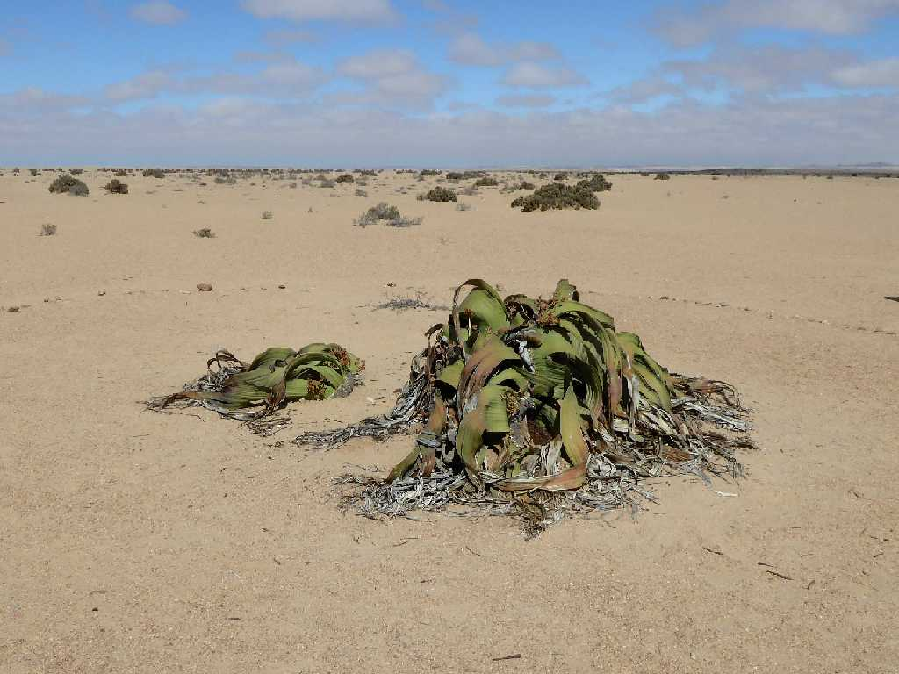
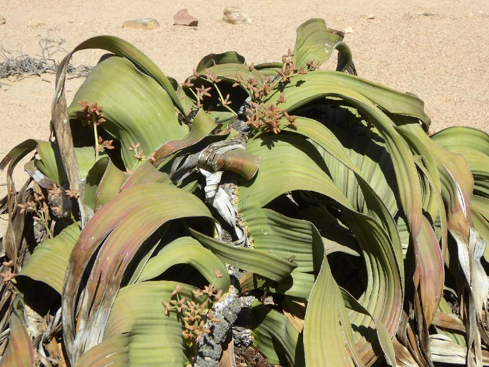
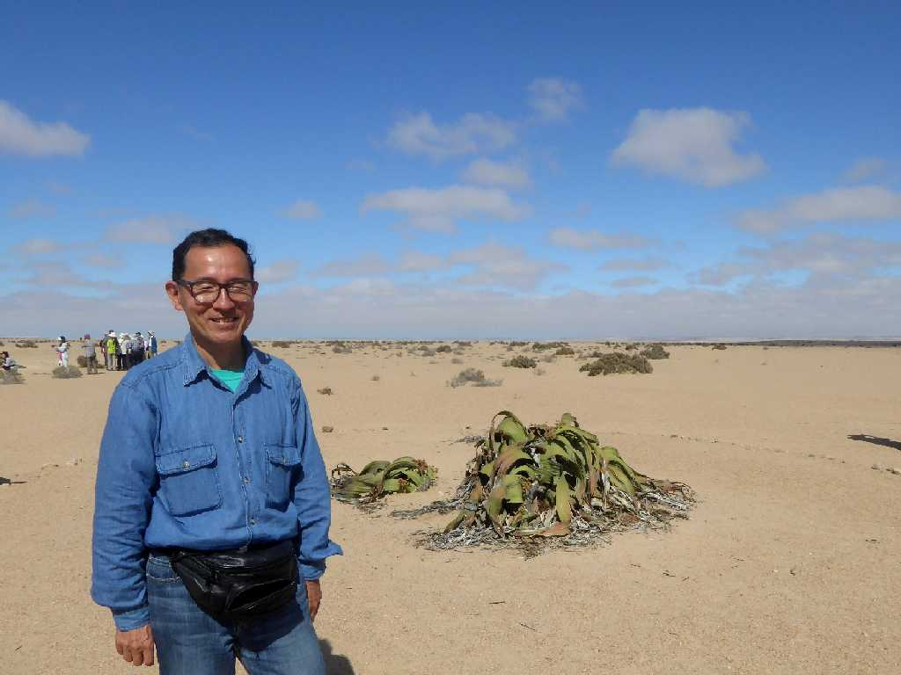

Welwitschia Namib Desert
ナミブ砂漠に生息する１,０００年を超え生き続けている生きた化石と云われる奇想天外

Welwitschia
雨が降らない世界最古のナミブ砂漠に生じる大西洋からの偏西風により発生する霧を集めて水分を得て生息している奇想天外

January 27 2016 Welwitschia
１億年前に出現した奇想天外は２,０００年を超え生息してる個体もあると考えられている